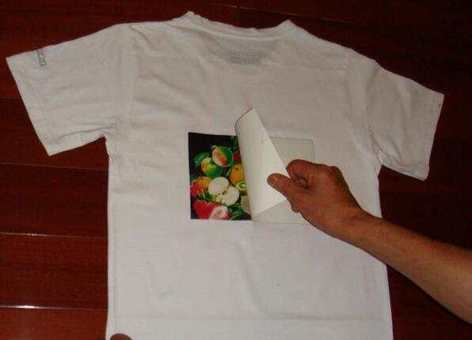

This trend started to become popular on Tiktok where people uploaded various videos of them attempting to make whipped coffee at home.
 Whipped Coffee Tutorial
Whipped Coffee Tutorial
Face masks have now become a necessity during COVID-19 where states mandate, if you are going outside for any activity, you must wear one. This means that people have become creative with what they have at home. The shortage of masks makes it hard for people to order them and we need to reserve them for medical worker who are treating patients in hospitals.
Bandana Face MasksAnother trend that arised from the Tiktok platform are iron on tshirt designs that you can make at home with your printer.
 Make T-shirt iron ons at home